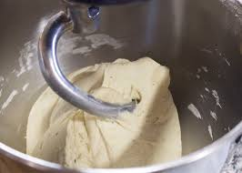

themAgain's Pizza Dough
This is a proper pizzeria recipe. The dough should be slightly firm and easy to stretch. If you find the dough isn't coming out quite the way you'd like it, try experimenting with different types of flour. It should also be mentioned that the amount of water you use is incredibly important. Just the slightest bit too much, and you'll be working with a gooey batch that just doesn't cooperate.
Note: This recipe requires a heavy duty mixer if proportions are not cut drastically.
Ingredients:
- [X] Water
- [X] Salt
- [X] Yeast
- [X] Flour
- Industrial Mixer
- Scale
- Separate a small portion of the water and add your yeast to that separated portion. Set to the side for fifteen or so minutes so that the yeast can activate itself in the water.
- Measure out the rest of your water and add it to the mixer.
- Next, add the salt to the water in your mixer and give it a bit of a stir to help it dissolve.
- Weigh out the flour, but don't add it yet.
- Check your yeast. If there is a small bit of foam formed at the top of the water it's in, it is activated and ready o be added to the mixer. Do so.
- Now you can add in your flour. I prefer to add about half of it, and slowly add the rest of the flour as the mixer is going.
- Set the mixer for ten minutes. You can mix longer if the dough doesn't look something like the following image.

- Move dough into a container that has been sprinkled with flour. This will help keep the dough from sticking too much when you remove it later.
- Let set in a cool refrigerator overnight.
- When the dough has finished setting, you can cut and weigh it into individual portions to be used for pizzas. Keep it refrigerated until then.